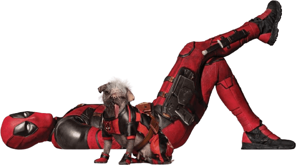
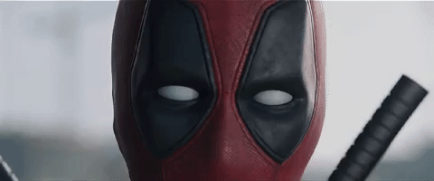
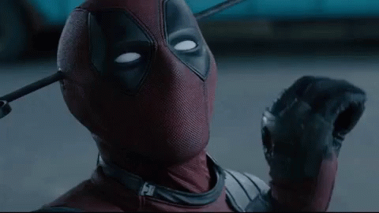
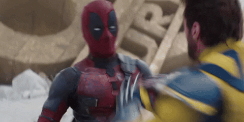

Películas
Las películas de Deadpool han sido un gran éxito, destacándose por su enfoque único dentro del género de superhéroes. Aquí te dejo un detalle sobre ambas películas, incluyendo reseñas, tráilers y algunas curiosidades interesantes.
Deadpool (2016)
La primera película de Deadpool cuenta la historia de Wade Wilson, un mercenario con un sentido del humor retorcido que, tras ser sometido a un experimento que le otorga habilidades curativas, busca vengarse de aquellos que lo transformaron en un ser desfigurado.
Ver Tráiler

El tráiler de Deadpool fue revolucionario por su estilo inusual y su tono subido de tono. Se presentó como un adelanto fiel al estilo del personaje, lo que ayudó a generar una gran expectación entre los fans.
Reseñas
La película recibió elogios por su tono irreverente y su habilidad para romper la cuarta pared. Los críticos destacaron la actuación de Ryan Reynolds, describiéndola como la perfecta encarnación del personaje. Fue un éxito tanto en taquilla como en crítica, superando las expectativas.
Rotten Tomatoes la calificó con un 85% de aprobación, con críticas que elogiaron su mezcla de humor negro, acción y fidelidad al personaje de los cómics.
Deadpool 2 (2018)
En esta secuela, Deadpool forma un equipo llamado X-Force para proteger a un joven mutante de Cable, un soldado cibernético del futuro. La película sigue el mismo estilo de humor que su predecesora, con más acción y personajes nuevos.
Ver Tráiler

El tráiler de Deadpool 2 continuó con la tradición de bromas y referencias metanarrativas, incluso parodiando otros tráilers de películas de superhéroes, lo que generó una gran expectativa entre los fans.
Reseñas
Deadpool 2 fue bien recibida por la crítica, aunque algunos señalaron que no tenía el mismo impacto novedoso que la primera película. Sin embargo, la incorporación de nuevos personajes como Cable (Josh Brolin) y Domino (Zazie Beetz) fue muy apreciada.
Rotten Tomatoes le dio una calificación del 84%, con elogios por su acción y su humor, aunque algunos criticaron su trama menos original.
Deadpool & Wolverine
Deadpool viaja en el tiempo con la intención de reclutar a Wolverine en la batalla contra un enemigo común: Paradox
Ver Tráiler

El tráiler de Deadpool 3 establece un tono emocionante y cómico, mientras sugiere una trama que podría involucrar el multiverso y la integración de Deadpool en el UCM. La química entre Deadpool y Wolverine es uno de los puntos fuertes.
Reseñas
Los críticos han elogiado la película por su humor, acción y la química entre Reynolds y Jackman. El humor meta, característico de la franquicia Deadpool, es uno de los puntos fuertes, con ideas ingeniosas a lo largo de todo el filme.
Algunos críticos señalaron que la película puede sentirse sobrecargada y caótica en ocasiones. Aunque las escenas de acción y los efectos visuales en general recibieron elogios, algunos encontraron el ritmo de la película y la gran cantidad de personajes un poco abrumadores.